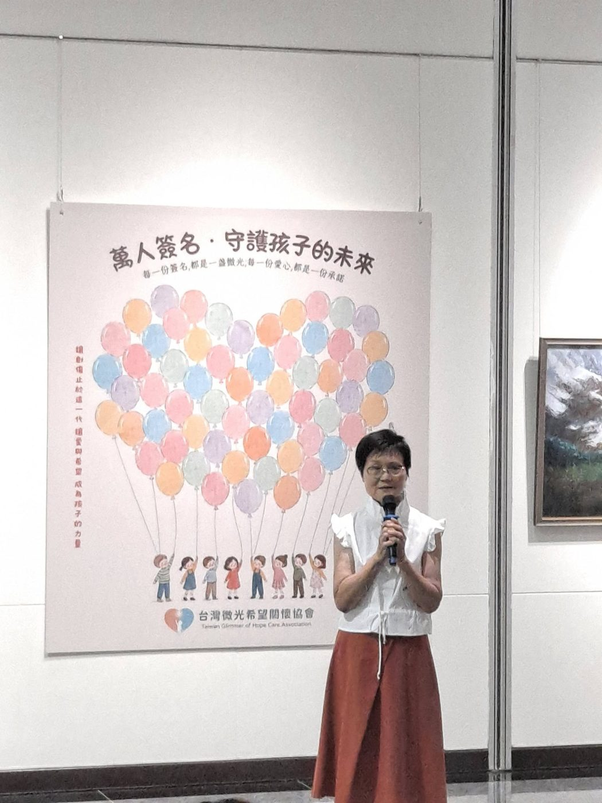

畫展不是重點，是請大家一起關心孩子
理事長林秀霞「浮生藝憶・微光傳愛」開幕致詞

2026 年 8 月 1 日，「浮生藝憶・微光傳愛」林秀霞油畫公益個展在國立中正紀念堂開幕。理事長林秀霞在開幕典禮上，沒有多談自己的畫，而是談她看見的孩子，以及協會為什麼從畫畫開始。以下依開幕影片整理，為便於閱讀略作分段，部分段落略去（以「……」標示），唱名介紹貴賓的段落未收錄。
致詞全文
其實今天不是邀請你們來看我的畫展。我的畫可能能夠感動某些人，可能對真正科班的藝術家來講不算什麼，我也覺得這世界上絕不缺少畫展，到處都看得到。
因為我是媒體人出身，我看得懂社會的問題所在。……我覺得有很多的孩子，其實是在黑暗裡面掙扎著長大，在黑暗裡面哭泣，他們不被看見、不被關心。他們可能要花很多的力氣，掙扎著在他們的成長過程裡面，不僅是經濟與物質的生活，甚至他們心裡受到很大的傷害，無法復原。
因為我五年前開始畫畫，我覺得畫畫對我來說，不是開一個畫展、兩個畫展，畫出幾幅畫被人家拍拍手這個意義而已。在畫的過程裡，其實都是我這一生的所見所聞以及我的生命、成長與觀察，然後體現在我的作品上面。我這一生所受的所有的苦都變成我的養分。我在創作的過程裡也在不斷的思索：我的畫除了能夠感動人、能夠被人喜愛以外，還可以發揮什麼力量呢？
今天就是我對這個力量的觀察與展現。我希望能夠引起一些人，不管是喜歡藝術的，或不喜歡藝術的，從我的周圍、我的好朋友，我先號召，大家一起來關心一個社會議題。如果我們把一群本來可能有機會成為工程師、科學家、藝術家，可能有希望在社會上成為有用之材，甚至能夠改變我們的國家的前途，這些孩子，我們把他拉起來，長大以後成為穩定社會的中堅力量，那應該是很有意義的事情。
所以畫展不是重點。今天把你們請到這裡，是要請你們來關心一個我所看到的社會議題。我希望每一個人都能夠像我們的台灣微光希望關懷協會，用這個微光點亮一個小小的微光，然後集合一盞、兩盞、三盞、五盞、一千盞、一萬盞、一百萬盞、一千萬盞，我們就能夠翻轉孩子們的一生。不知道各位有沒有跟我一樣的想法？每一個人多一點的關心、多一點的幫助，這個力量結合起來是不可小覷的。
我從一年多前剴剴事件發生之後，就一直在想這個問題：還有多少個剴剴呢？這些孩子怎麼辦呢？我在一年多前，因為永福扶輪社在做受虐兒的關懷，我在永福底下的一個衛星社，我在畫畫。我覺得畫畫可以療癒我，也應該可以療癒這些孩子吧。所以我就請了藝術治療的專家演講，果然他說這是最有用的一種療癒。因為孩子們外在的傷害、身體的傷害，很容易透過醫療復原，可是內心的傷害，可能跟著他一輩子。
所以我從繪畫療癒開始做了一年。這些孩子從一開始的驚恐眼神，會排斥人、不敢讓人靠近，現在他會跟你分享他的創作。我覺得對這些孩子來講，這是有用的。而且我已經看見了孩子的改變：他們從沒有笑容，到現在課堂上歡聲笑語，而且很重要的是，他們有了自信。
我上個月幫他們辦了一個屬於孩子們的畫展，各位看到那個電視螢幕，等一下都可以去看。每一次的繪畫課我都帶了很多獎品去獎勵、吸引他們。一個月、兩個月、一年後他們有了作品，我辦展覽，他們開始有了自信。其中有個中輟的孩子，……現在他已經願意回到學校了，而且有自信、有笑容了。以前要靠近他，他就逃走；現在他願意跟你一起談，為什麼要這樣創作。
我覺得藝術治療這些孩子的心是對的，但是這只是我的第一步。後面還要關心他的原生家庭，辦親職教育，而且不只會畫，教他們舞蹈也可以，教他們AI、電腦等等，還有英文，補他們的功課，數學不好，也可以補。我就結合散居在各地的小小教會團體，然後一個班、兩個班，一個班、一個班地複製下去。我也在培養這些畫畫的老師，結合願意陪伴孩子們繪畫、未來長期陪伴的師資群。現在一點一點地建立起來。
這一年多來，有人說你何苦呢，都七十好幾了。但是我在想，如果我這一生，在生命的最後這個階段，可以為台灣未來的這些可用之材、這些可愛的小朋友盡一點點心力，我覺得我們的人生就更有價值。我希望各位今天來到現場，看一場畫展之外，最重要的就是把這個議題帶回去思考：你可以怎麼樣幫助這些孩子。一點光、一盞燈、一點點小小的心意，我們都可以做到。謝謝各位。
活動照片
理事長說的「一個班、一個班地複製下去」，現在正在發生：協會目前在板橋明穗、中壢宣愛、瑞芳愛鄰都有固定的藝術陪伴課程，據點持續增加中。各據點的活動紀錄請見最新消息。